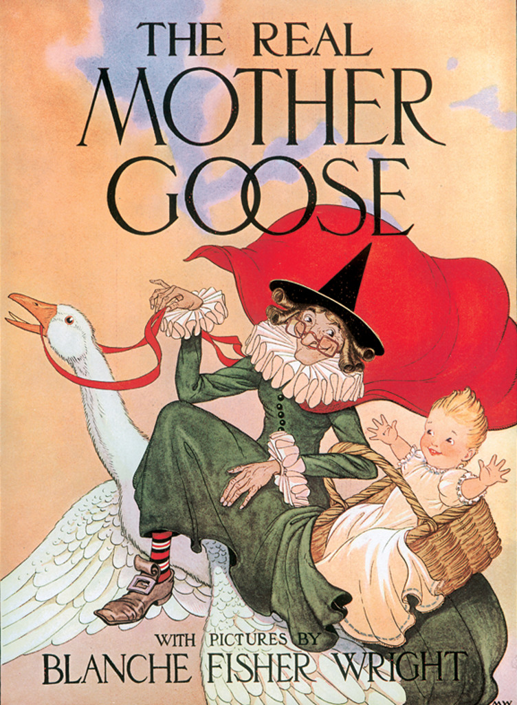

About

- Title
- The Real Mother Goose
- Author
- Mother Goose
- Date
- 2016-01-03
Accessibility
The publisher's accessibility information for the original EPUB.
Ways of reading
- Text and page layout cannot be modified as the reading experience is close to a print version, but reading systems can still provide zooming options
- No information about nonvisual reading is available
Conformance
- No information is available
Source EPUB
real-mother-goose; identifier: urn:uuid:c66e5bc6-f0ff-4435-bef6-376a6196ca81; converter 1.0.0. Keep the source EPUB for future reconversion. The metadata below describes that EPUB.
- identifier
- urn:uuid:c66e5bc6-f0ff-4435-bef6-376a6196ca81
- title
- The Real Mother Goose
- language
- en-gb
- creator (aut)
- Mother Goose
- publisher
- BB eBooks
- date
- 2016-01-03
- description
- Old Mother Goose is still the reigning favorite of the nursery, and this big, lovely book with the famous Blanche Fisher Wright illustrations is the perfect introduction to her charms for little children.
- rights
- Public Domain
- coverage
- Worldwide
- subject
- Children’s
- subject
- Classics
- contributor (ill)
- Blanche Fisher Wright
- contributor (bkd)
- BB eBooks
Original EPUB metadata
<metadata xmlns="http://www.idpf.org/2007/opf" xmlns:dc="http://purl.org/dc/elements/1.1/">
<dc:identifier id="BookId">urn:uuid:c66e5bc6-f0ff-4435-bef6-376a6196ca81</dc:identifier>
<meta refines="#BookId" property="identifier-type" scheme="xsd:string">uuid</meta>
<dc:title id="metadata_id_title">The Real Mother Goose</dc:title>
<meta refines="#metadata_id_title" property="title-type">main</meta>
<dc:language>en-gb</dc:language>
<dc:creator id="metadata_id_creator">Mother Goose</dc:creator>
<meta refines="#metadata_id_creator" property="role" scheme="marc:relators" id="role">aut</meta>
<dc:publisher>BB eBooks</dc:publisher>
<dc:date>2016-01-03</dc:date>
<meta property="dcterms:modified">2016-01-03T13:35:16Z</meta>
<meta name="cover" content="My_Cover_ID"/>
<dc:description>Old Mother Goose is still the reigning favorite of the nursery, and this big, lovely book with the famous Blanche Fisher Wright illustrations is the perfect introduction to her charms for little children.</dc:description>
<dc:rights>Public Domain</dc:rights>
<dc:coverage>Worldwide</dc:coverage>
<dc:subject>Children’s</dc:subject>
<dc:subject>Classics</dc:subject>
<dc:contributor id="metadata_id_contributor1">Blanche Fisher Wright</dc:contributor>
<meta refines="#metadata_id_contributor1" property="role" scheme="marc:relators">ill</meta>
<meta refines="#metadata_id_contributor1" property="display-seq">1</meta>
<dc:contributor id="metadata_id_contributor2">BB eBooks</dc:contributor>
<meta refines="#metadata_id_contributor2" property="role" scheme="marc:relators">bkd</meta>
<meta refines="#metadata_id_contributor2" property="display-seq">2</meta>
<meta property="rendition:layout">pre-paginated</meta>
<meta property="rendition:orientation">auto</meta>
<meta property="rendition:spread">auto</meta>
</metadata>